FIFA
Origen
La FIFA (Federación Internacional de Fútbol Asociación) fue fundada el 21 de mayo de 1904 en París, Francia, por representantes de siete países europeos: Francia, Bélgica, Dinamarca, Países Bajos, España (a través del Madrid FC), Suecia y Suiza. Su objetivo era establecer reglas comunes y organizar competiciones internacionales de fútbol.
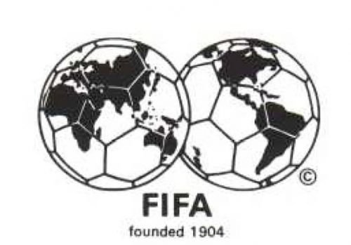
Expansión Mundial
Durante las primeras décadas del siglo XX, más países se unieron a la organización. En 1905 ingresó Inglaterra, cuya asociación de fútbol era una de las más influyentes del mundo.
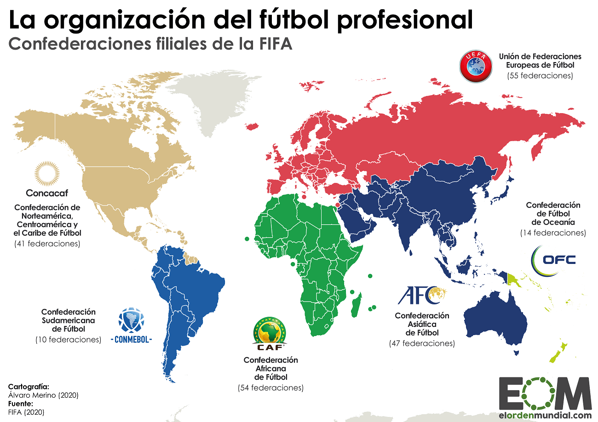
Despues de la Segunda Guerra Mundial
Tras la guerra, el fútbol se popularizó enormemente. La FIFA incorporó federaciones de África, Asia y Oceanía, convirtiéndose en una organización verdaderamente global.
La Copa del Mundo
La Copa Mundial de la FIFA es el torneo de fútbol más prestigioso del planeta. Celebrada cada cuatro años desde 1930, reúne a las mejores selecciones nacionales en una competición que paraliza al mundo entero. Con una audiencia de miles de millones de espectadores y una rica historia de momentos inolvidables, el Mundial representa la máxima expresión del fútbol internacional y uno de los eventos deportivos más importantes de la historia.
- Brasil - 5 títulos
- Alemania - 4 títulos
- Italia - 4 títulos
- Argentina - 3 títulos
- España - 2 titulo
- Francia - 2 títulos
- Uruguay - 2 títulos
- Inglaterra - 1 titulo
Era Moderna
Desde finales del siglo XX, la FIFA amplió sus torneos:
- Copa Mundial Femenina
- Mundiales juveniles (Sub-17 y Sub-20)
- Copa Mundial de Clubes
- Torneos de fútbol sala y fútbol playa
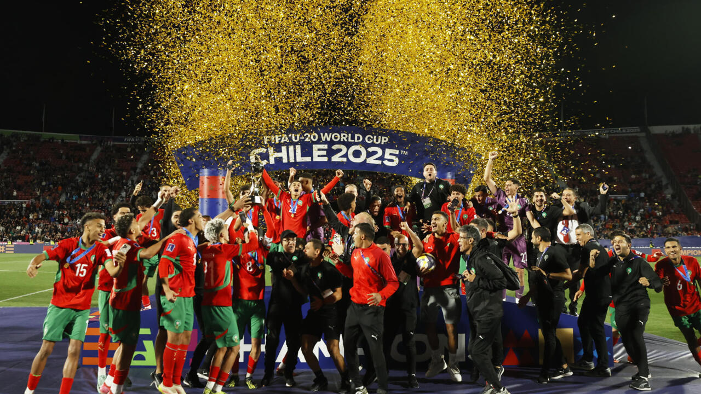
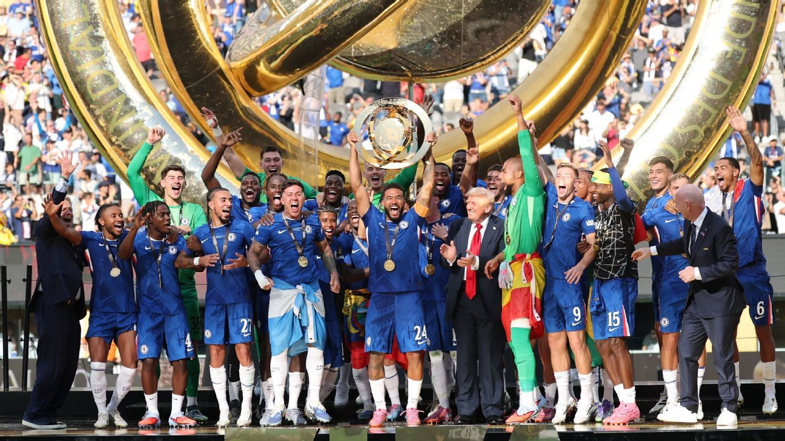
Controversias
La FIFA también ha enfrentado críticas y escándalos, especialmente relacionados con corrupción y procesos de elección de sedes. En 2015, varias investigaciones internacionales llevaron a arrestos y reformas internas.
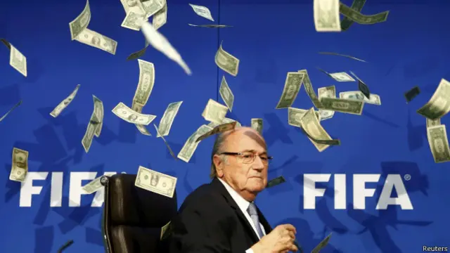
Dato Curioso
El primer presidente de la FIFA fue el francés Robert Guérin, mientras que uno de los presidentes más influyentes fue João Havelange, quien impulsó la expansión global del fútbol.
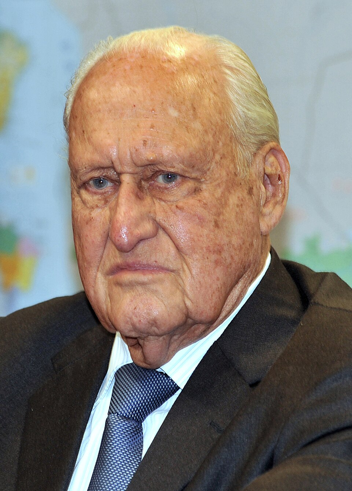
FIFA Hoy
Su sede se encuentra en Zúrich, Suiza. Actualmente reúne a 211 asociaciones nacionales afiliadas, siendo una de las organizaciones deportivas más grandes del mundo. Organiza la Copa Mundial, el evento deportivo más visto del planeta después de los Juegos Olímpicos.
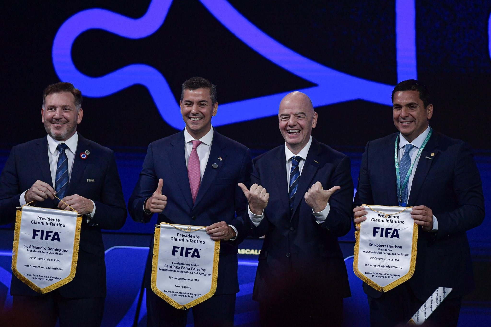
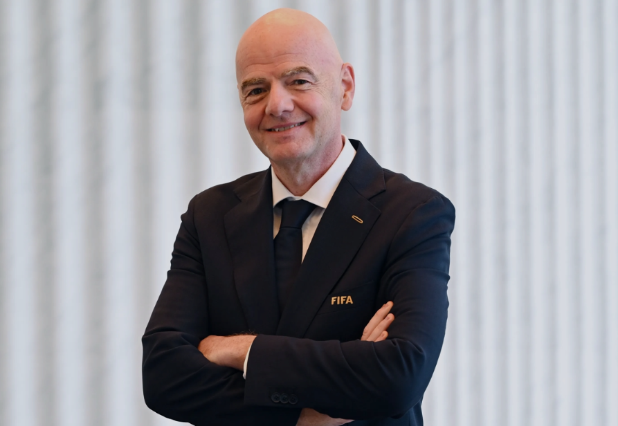
Argentina en los Mundiales
Ganados
- 1978 - Argentina vs Paises Bajos - 3 a 1
- 1986 - Argentina vs Alemania - 3 a 2
- 2022 - Argentina vs Francia - 3 a 3, (4 a 2)
Sede 1978
Argentina fue sede en el mundial de 1978, como se ve en la imagen de fondo
Partidos Históricos
- Arg vs. Ing 1986 Cuartos - 2 a 1
- Arg vs. Uru 1930 Final - 2 a 4
- Arg vs. Ita 1990 Semifinal - 1 a 1, 4 a 3 penales
- Arg vs. Ned 2022 Cuartos - 2 a 2, 4 a 3 penales
- Arg vs. Mex 2006 Octavos - 2 a 1
- Arg vs. Bra 1990 Octavos - 1 a 0
Subcampeonatos
- 1930 - Argentina vs Uruguay - 4 a 2
- 1990 - Argentina vs Alemania - 1 a 0
- 2014 - Argentina vs Alemania - 1 a 0
- 2026 - Argentina vs España - 1 a 0
PANINI
Origen
Panini es una empresa italiana fundada en 1961 por los hermanos Giuseppe, Benito, Umberto y Franco Panini en Módena, Italia. Inicialmente era una pequeña imprenta dedicada a la producción de material gráfico, como libros y tarjetas postales. En los años 60, la compañía dio un giro decisivo hacia los cromos coleccionables de fútbol, un mercado que comenzaba a popularizarse en Europa
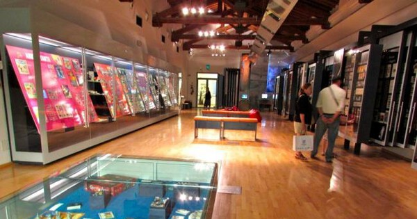
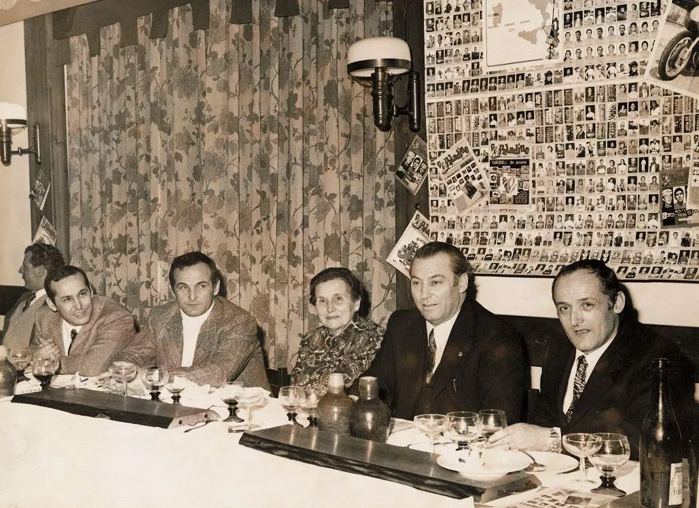
Desarrollo
En 1961, Panini lanzó su primer álbum de cromos de fútbol. Era un cuaderno en el que los aficionados podían pegar cromos de jugadores de clubes italianos, una novedad que rápidamente captó la atención de niños y jóvenes. El éxito fue tan grande que Panini empezó a producir álbumes cada temporada, y pronto el coleccionismo de cromos se convirtió en una tradición cultural en Italia y en Europa.
Panini ha ido modernizando sus productos:
- Introducción de cromos con efecto holográfico o metálico.
- Ediciones especiales de jugadores destacados.
- Álbumes digitales y apps modernas para complementar el coleccionismo físico.
Hoy, Panini no solo hace álbumes de fútbol, sino también de otros deportes, películas y cultura pop.
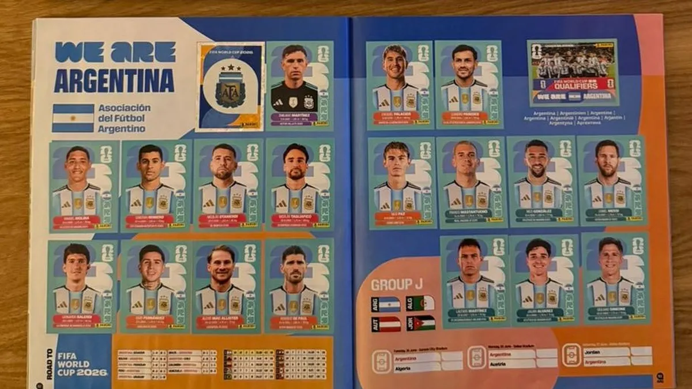
Asociacion con FIFA
Durante los años 70 y 80, Panini comenzó a expandirse a otros países europeos y América Latina. La empresa adquirió licencias oficiales de la FIFA, lo que le permitió crear álbumes de la Copa del Mundo, convirtiéndose en el estándar global para coleccionar cromos de fútbol.
1970: primer álbum oficial dedicado a una Copa del Mundo (México), el inicio de una tradición mundial.
1982: álbum del Mundial de España, ya con gran popularidad en toda Europa y Latinoamérica.
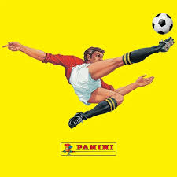
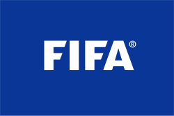
Otros Albumes
Álbumes de fútbol
- Mundial México 1970 - El primer álbum oficial de Panini para la Copa del Mundo. Marcó el inicio de la tradición mundial.
- Mundial España 1982 - Uno de los más populares, con gran cobertura de selecciones y jugadores europeos y sudamericanos.
- Mundial México 1986 - Destaca por la inclusión de cromos de figuras como Diego Armando Maradona.
- Mundial Italia 1990 - Innovador por sus cromos brillantes y portada llamativa.
- Mundial Francia 1998 - Con cromos de jugadores de fútbol modernos y efecto holográfico en algunos especiales.
- Mundial Brasil 2014 - Uno de los álbumes más completos, con cobertura detallada de todos los jugadores y estadios.
- Mundial Qatar 2022 - Incluyó cromos digitales y físicos, marcando la transición hacia coleccionismo híbrido físico-digital.
Álbumes de clubes y ligas
- Serie A (Italia) - Álbumes de temporada desde los años 60 hasta la actualidad, muy populares en Italia.
- Premier League (Inglaterra) - Desde finales de los 90, con cromos de equipos y jugadores ingleses.
- UEFA Champions League - Álbumes oficiales con jugadores de los clubes europeos más importantes.
Álbumes de otros deportes
- NBA y baloncesto - Panini produce cromos y stickers de ligas de baloncesto y estrellas internacionales.
- NFL y fútbol americano - Álbumes y cromos de jugadores icónicos de la liga estadounidense.
- Ciclismo y Fórmula 1 - Algunos álbumes especiales de competiciones históricas.
Álbumes de cultura pop
- Películas de Disney - Álbumes de clásicos como El Rey León, Star Wars, Frozen.
- Franquicias populares - Álbumes de Harry Potter, The Simpsons y Pokémon.
- Videojuegos - Algunos álbumes basados en videojuegos famosos y personajes icónicos.
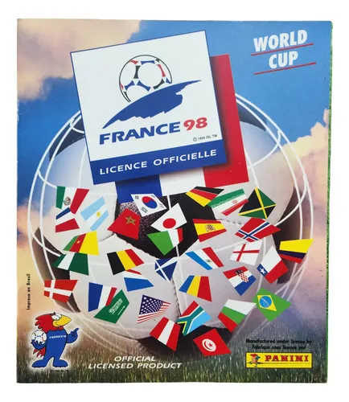
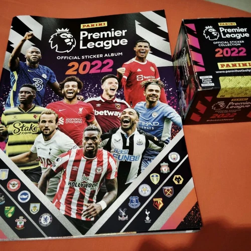
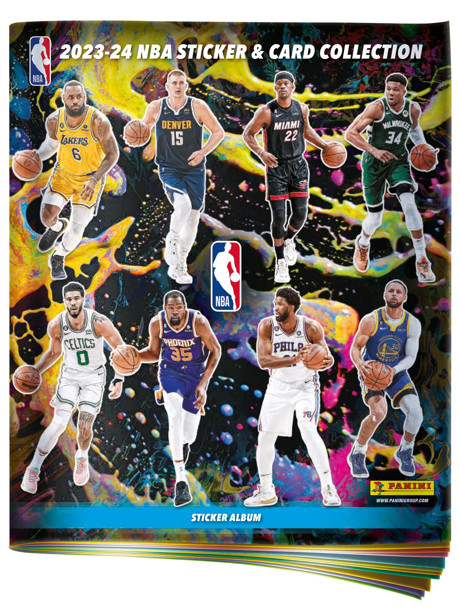
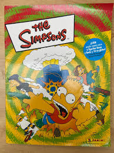
Dato Curioso
El logo del hombre pateando una pelota que aparece en los álbumes de Panini es Carlo Parola, un defensa italiano del club Juventus, inmortalizado tras hacer un gol espectacular de chilena contra la Fiorentina en 1950.
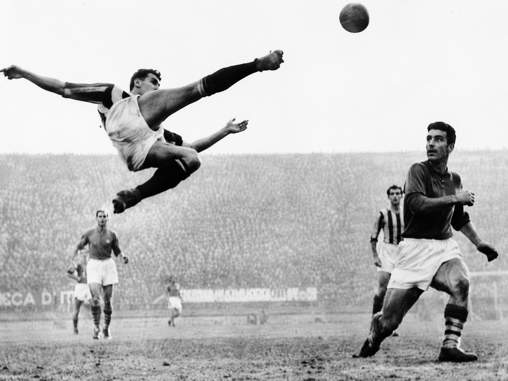